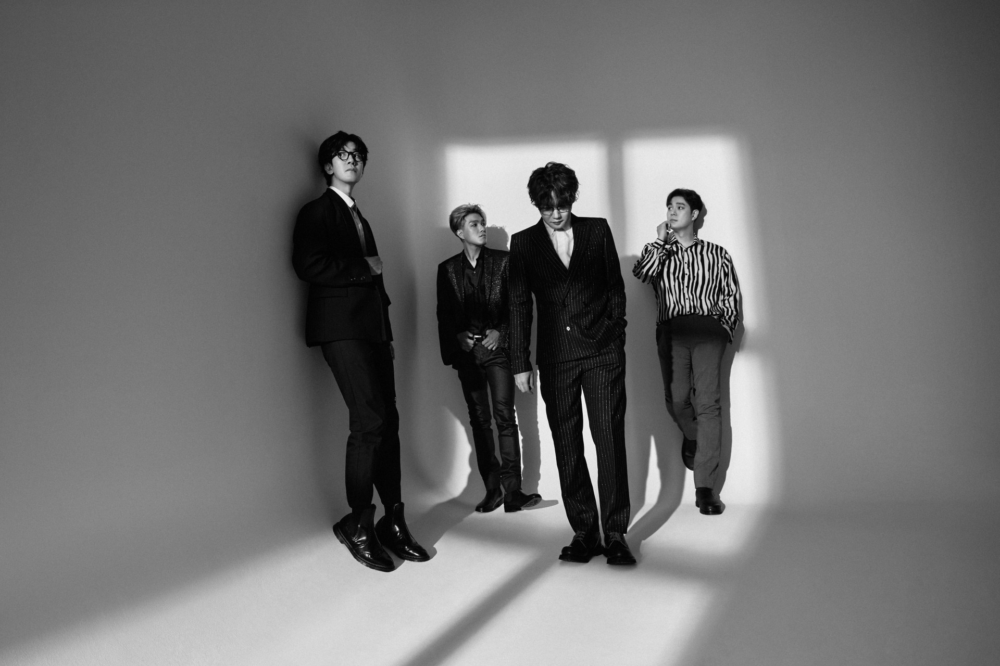

NELL
'NELL'은 1999년에 결성된 대한민국의 모던 록밴드이다. 멤버는 김종완(보컬, 기타, 키보드), 이재경(기타, 키보드), 이정훈(베이스, 탬버린, 키보드, 코러스), 정재원(드럼, 코러스)으로 구성되어 있다.
OFFICIAL_NELLSPACE BOHEMIAN
Latest music of NELL♪
'NELL'은 1999년에 결성된 대한민국의 모던 록밴드이다. 멤버는 김종완(보컬, 기타, 키보드), 이재경(기타, 키보드), 이정훈(베이스, 탬버린, 키보드, 코러스), 정재원(드럼, 코러스)으로 구성되어 있다.
OFFICIAL_NELL